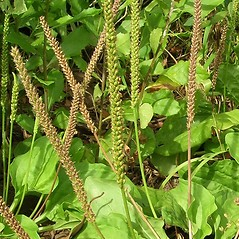
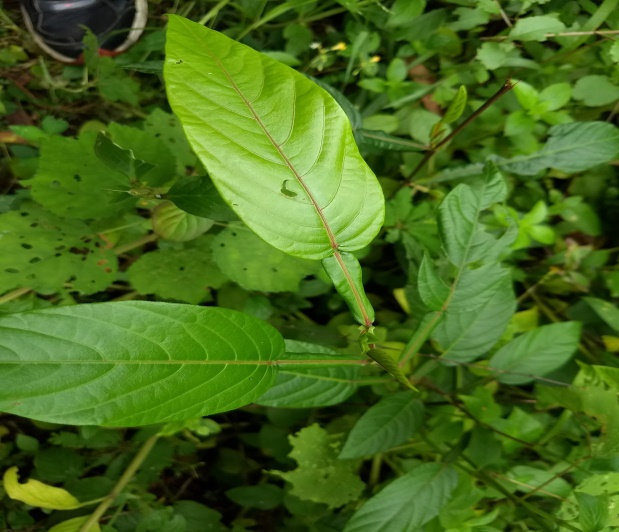

KIDNEY STONES

EFFICACY
- Anti-Inflammatory;Diuretic; Antipyretics;Expectorant.
Plant parts used
- All parts of the plant
Treatment
- 7 g of fresh leaves spoon; Imperata roots 7 g; 2 g fresh shard leaves; 6 g of fresh cat whiskers herb; 2 g fresh meniran herbs; Atr.130 ml, Made by infusion or crushed, Taken once a day 100 ml; if made pee; drink 1 a day 1/4 cup; repeated for 14 days.
SITTING LEAVES

Benefits
- Anti-inflammatory; Antipyretics; Diuretic; Stomakik; Parathisid.
Treatment
- Leaves sitting fresh 6 g; 3 g of fresh, vile leaves; 6 g of fresh cat whiskers herb; 115 ml water, made by infusion, drunk once a day 100 ml.
Avocado
Treatment
- 7 pieces of fresh avocado leaves; Water 110 mi,Made by infusion or brewed, drink 2 times a day;morning and evening, every time I drink 100 ml.